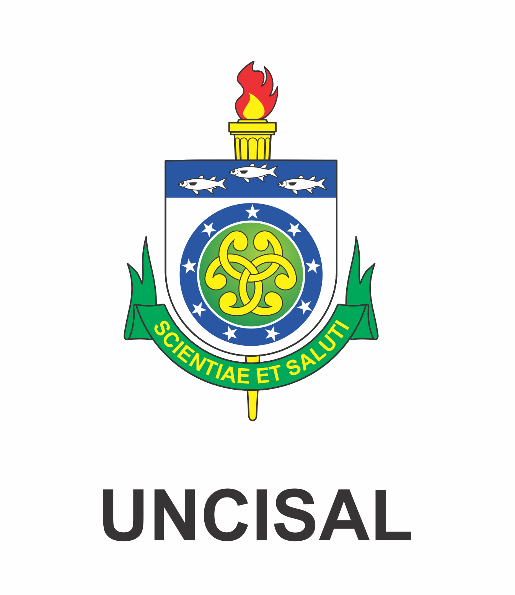

Dashboard de análise acadêmica
Filtros Avançados
Total de Discentes- Base filtrada
Matriculados- Situação no curso
Em Aberto- Curso ou período
Cursos- Ofertas distintas
Polos- Locais distintos
% Matriculados- No curso
Discentes por Curso
Top Polos
Situação Acadêmica
Período do Curso
Período Letivo
Situação no Curso
Distribuição por Polo
Lista de Discentes
| # | Matrícula | Nome | Curso | Polo | Situação no Curso | Situação no Período | Período Letivo | Período | Email Acadêmico |
|---|